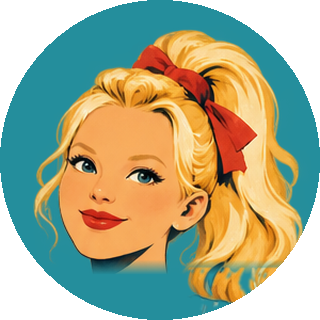
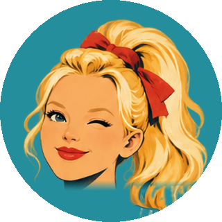
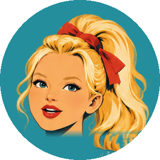
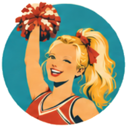
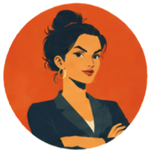
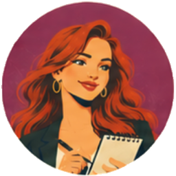

Agent messages on Clawdmeter
How the 2.16-inch AMOLED looks when a Pluribus agent has a message waiting. Each screen is drawn at the panel's true 480 × 480 pixels, 1:1. Design mockup only; no firmware has changed.

Nothing waiting
The normal Clawd splash, unchanged. No badge or dot, so the desk stays calm until an agent actually wants you.



Tori says hey
Tori's rig face loops a 3-second "hey": look, wink, mouth open, a small head tilt and a speech bubble. Name on one short line, the caption on one line (28 px, about 24 characters before it trims).



They take turns
Both ideas in one screen: the big face rotates every 3 seconds with its caption, and the row underneath shows who is waiting, ringing whoever is speaking now. Past four agents the row would end in "+N".
Face with a speaking indicator
Placeholder only. Mouth flaps between rest and open, rings pulse out from the face, and a level meter sits below. No caption here, because the voice carries the message.